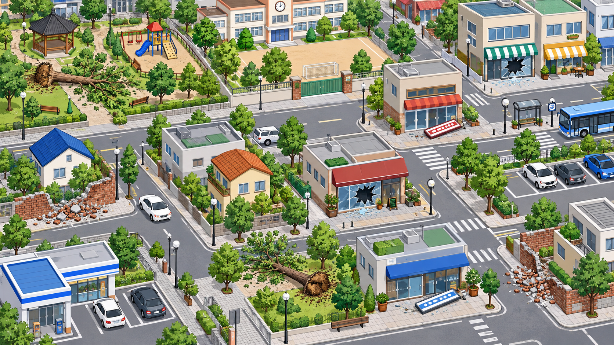

3단계 · 20초 위험 찾기
결과가 나타난 곳을 모두 찾으세요.
20초 안에 위험 장소 8곳에 위험 카드를 놓으세요.
20초 남음
0 / 8찾은 곳
방법 · 떨어진 나무, 깨진 유리창, 바닥에 떨어진 간판, 무너진 벽을 찾으세요. 각 결과는 두 곳씩 있습니다.

위험 카드 · 8장
카드를 하나씩 끌거나, 카드와 장소를 차례로 누르세요.
20초 안에 위험 장소 8곳에 위험 카드를 놓으세요.
방법 · 떨어진 나무, 깨진 유리창, 바닥에 떨어진 간판, 무너진 벽을 찾으세요. 각 결과는 두 곳씩 있습니다.

위험 카드 · 8장
카드를 하나씩 끌거나, 카드와 장소를 차례로 누르세요.